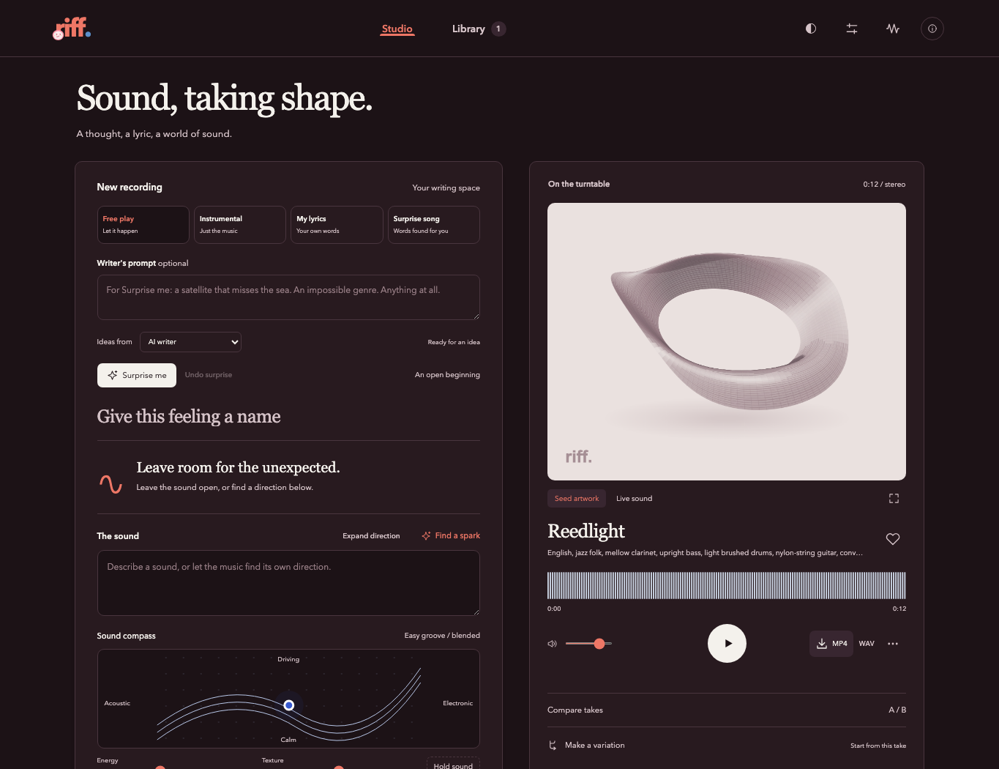
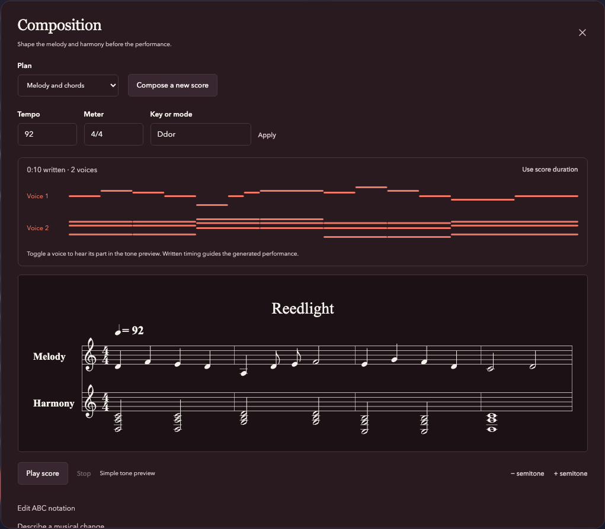
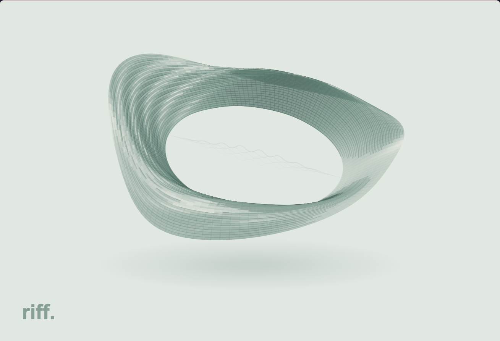

Leave room for surprise.
Your lyrics, an open direction, or nothing at all. Explore new words and sounds, hold onto what works, and let the next take take you somewhere.
A music studio by Flip Engineering
Begin with a feeling. Find a melody. Make another take.
Riff brings generative music and an editable score to the same desk.
Apple Silicon · NVIDIA CUDA · CPU

Your lyrics, an open direction, or nothing at all. Explore new words and sounds, hold onto what works, and let the next take take you somewhere.
Open YuE2's score. Change the harmony, move a phrase, shift the key. Describe a change in words or reach for the notes yourself.
Try a few lines before a full performance. Keep its phrasing and explore another rendering, or let the producer propose a fresh take. Compare them at the same moment.
From an idea to a composition
Compose before you perform. See the voices unfold, audition them together or apart, edit the notes, and fit the recording to the score. Every take keeps the ingredients for its next variation.
Explore the controls ↗
A shape for every sound
Lines carry the waveform through a floating form. Bass opens its contours; each attack leaves a ripple. Shape its surface and motion, then keep the living artwork and complete song together as an MP4.
